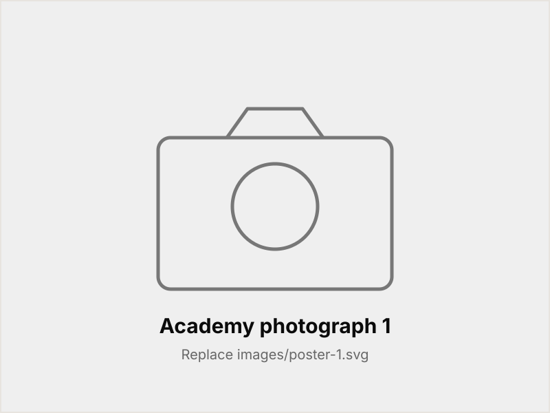

AI & U — where U stands for Ubuntu — is South Africa’s coding and AI literacy movement, weaving every no-fee school, every learner and every community into the future of work. AI & U Academy is where that becomes structured learning, online or in person.
We started with AI. The catalogue now covers technical, business, compliance, safety and admin — so wherever you are starting from, there is something aimed at where you want to go.
Learners, teachers, school leavers and working adults — practical courses that fit around the rest of life, and a qualification at the end of it for anyone who wants one.
The photographs below are still to come; send them through and they go straight in.

Register your interest and we'll confirm your place on the next intake.
Upskill Yourself